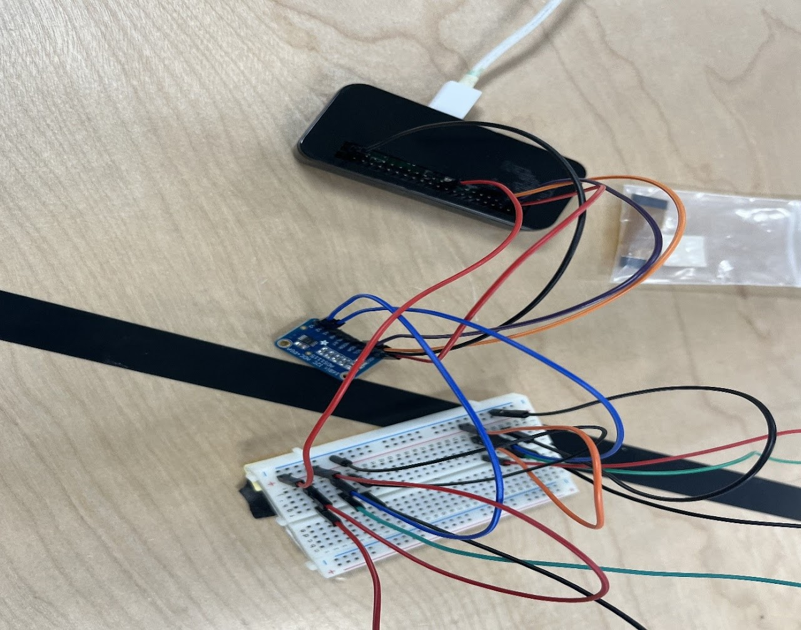

For my senior design/capstone project, I worked with a partner to create a prototype Spherical Fluid Pulsation Dampener. In industries such as oil and nuclear, the heavy-duty pumps used will create fluid pulsations that can damage equipment downstream. A pulsation dampener is meant to prevent such damage by converting these pulsations to a steady flow. However, these dampeners rely on moving parts that require maintenance over their lifetime. A spherical pulsation dampener, on the other hand, uses internal distributor and receiver plates to passively create a damping effect, eliminating the need for periodic maintainance. We developed, 3D printed, and tested the prototype based on prior research.
Prototype Creation
CAD Modelling
One of my responsibilities was creating the CAD model for the prototype. After iterating on the design, we settled on an assembly consisting of four different parts: two housing components with built-in pipes and separate receiver and distributor plates. The plates are only shown separately for presentation purposes as they were each 3D printed with half of the housing.
CAD Drafting
I was also responsible for converting the CAD model into the drawings seen here. These drawings follow the general dimensioning guidelines and are created, including the appropriate symbols for holes, radii, and diameters.
ANSYS Simulation
My other major responsibility was simulating the assembly in ANSYS so that we could evaluate whether our design would hold up in testing conditions. To run the simulation, I fed a negative of the assembly model into ANSYS Fluent, which provided pressure data for a static structural simulation (assuming steady-state conditions).
Testing and Results
Development of Testing Apparatus
To test the prototype, we used a cheap aquarium pump and pressure sensors as close to the inlet and outlet as possible. These pressure sensors had a range of 0 to 10 psi, or 0 to 64 kPa. With an input of 5v, the pressure range would translate to an output of 0.5v to 4.5v, but the output range would decrease to match a lower input voltage.
In order to record data, I also wrote a command line program for the Raspberry Pi Zero W that would interface with an ADS1115 Analog to Digital converter. This program would record data for a specified amount of seconds and a specified time interval. It would then output a graph for immediate viewing and an Excel file containing the recorded data. The setup for the raspberry pi is shown on the right and the code for the command line program can be found here.

Raspberry Pi Setup
Results
The results of our experiments can be seen here; while the damping effect was not as much as initially expected, the actual damping effect is clearly demonstrated.